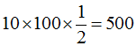
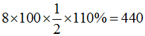

國土計畫法修法內容
內文
各位同學好
本週專欄提醒本次國土計畫法主要修正下列五條，其中最主要是第45條國土計畫及功能分區圖之公告實施期限延長，其餘大致多為文字調整。最具爭議的15條國土計畫適時檢討變更情形(增列經行政院核定之國家重大建設計畫)並未修正：
• T. ABLE_PLACEHOLDER_1
注：本文圖片存放於 ./images/ 目錄下
各位同學好
本週專欄提醒本次國土計畫法主要修正下列五條，其中最主要是第45條國土計畫及功能分區圖之公告實施期限延長，其餘大致多為文字調整。最具爭議的15條國土計畫適時檢討變更情形(增列經行政院核定之國家重大建設計畫)並未修正：
注：本文圖片存放於 ./images/ 目錄下
不動產分割分為標示分割與權利分割二種。前者辦理標示變更登記，後者辦理所有權移轉登記；前者不課稅，後者原則上應課稅。不動產分割包括土地分割與建物分割二種。茲分述如下：
• (一) 土地分割：分別共有土地分割後，各人所取得之土地價值與其分割前應有部分價值相等者，免徵土地增值稅；其價值減少者，就其減少部分課徵土地增值稅。土地價值之計算，以共有土地分割時之公告土地現值為準（土地稅法施行細則§42ⅡⅤ）。共有土地之分割，共有人因分割所取得之土地價值，與依其應有部分所算得之價值較少而未受補償時，自屬無償移轉之一種，應向取得土地價值增多者，就其增多部分課徵土地增值稅（司法院釋字第173號）。詳言之，共有土地之分割，共有人因分割所取得之土地價值，與依其應有部分所算得之價值減少，倘受有補償時，屬於有償移轉，應向取得土地價值減少者，就其減少部分課徵土地增值稅。倘未受補償時，屬於無償移轉，應向取得土地價值增多者，就其增多部分課徵土地增值稅。例如：甲、乙二人共有A地，應有部分各二分之一；甲、乙二人共有B地，應有部分各二分之一。A、B二地分割時之公告土地現值各為1,000萬元，A、B二地之甲、乙二人的前次移轉現值各為300萬元，前次移轉至本次移轉之物價指數120%。分割後，甲取得A地全部，乙取得B地全部。甲、乙二人各應繳納多少土地增值稅？（若有給付差額，甲繳納B地土地增值稅28萬元，乙繳納A地土地增值稅28萬元；若未給付差額，甲繳納A地土地增值稅28萬元，乙繳納B地土地增值稅28萬元）計算過程如下：
就A地而言：甲分割前土地價值：[圖片1]甲分割後土地價值：1,000乙分割前土地價值：[圖片2]乙分割後土地價值：0因此，就乙之價值減少部分課徵土地增值稅。
前次移轉現值：300x120%=360
本次移轉現值：[圖片3]
土地漲價總數額：500-360=140
土地增值稅：140x20%=28有給付差額（即受有補償）：屬於有償移轉，相當於買賣，應由原所有權人乙繳納土地增值稅28萬元。未給付差額（即未受補償）：屬於無償移轉，相當於贈與，應由取得所有權人甲繳納土地增值稅28萬元。
就B地而言：甲分割前土地價值：[圖片4]甲分割後土地價值：0乙分割前土地價值：[圖片5]乙分割後土地價值：1,000因此，就甲之價值減少部分課徵土地增值稅。
前次移轉現值：300x120%=360
本次移轉現值：[圖片6]
土地漲價總數額：500-360=140
土地增值稅：140x20%=28有給付差額（即受有補償）：屬於有償移轉，相當於買賣，應由原所有權人甲繳納土地增值稅28萬元。未給付差額（即未受補償）：屬於無償移轉，相當於贈與，應由取得所有權人乙繳納土地增值稅28萬元。
例如：甲、乙二人共有A地，應有部分各二分之一；甲、乙二人共有B地，應有部分各二分之一。A地面積100平方公尺，甲之前次移轉現值每平方公尺6萬元，乙之前次移轉現值每平方公尺8萬元，前次移轉至本次移轉之物價指數110%，本次移轉現值（即分割時之公告土地現值）每平方公尺10萬元。B地面積500平方公尺，甲之前次移轉現值每平方公尺2.5萬元，乙之前次移轉現值每平方公尺2萬元，前次移轉至本次移轉之物價指數108%，本次移轉現值（即分割時之公告土地現值）每平方公尺3萬元。分割後，甲取得A地全部，乙取得B地全部。甲、乙二人各應繳納多少土地增值稅？（若有給付差額，甲繳納B地土地增值稅15萬元，乙繳納A地土地增值稅12萬元；若未給付差額，甲繳納A地土地增值稅12萬元，乙繳納B地土地增值稅15萬元）計算過程如下：
就A地而言：甲分割前土地價值：[圖片7]甲分割後土地價值：10x100=1,000乙分割前土地價值：[圖片8]乙分割後土地價值：0因此，就乙之價值減少部分課徵土地增值稅。
前次移轉現值：[圖片9]
本次移轉現值：[圖片10]
土地漲價總數額：500-440=60
土地增值稅：60x20%=12有給付差額（即受有補償）：屬於有償移轉，相當於買賣，應由原所有權人乙繳納土地增值稅12萬元。未給付差額（即未受補償）：屬於無償移轉，相當於贈與，應由取得所有權人甲繳納土地增值稅12萬元。
就B地而言：甲分割前土地價值：[圖片11]甲分割後土地價值：0乙分割前土地價值：[圖片12]乙分割後土地價值：3x500=1,500因此，就甲之價值減少部分課徵土地增值稅。
前次移轉現值：[圖片13]
本次移轉現值：[圖片14]
土地漲價總數額：750-675=75
土地增值稅：75x20%=15有給付差額（即受有補償）：屬於有償移轉，相當於買賣，應由原所有權人甲繳納土地增值稅15萬元。未給付差額（即未受補償）：屬於無償移轉，相當於贈與，應由取得所有權人乙繳納土地增值稅15萬元。
附帶說明的是，分割屬於財產之移動，如以顯著不相當之代價，讓與財產，其差額部分，以贈與論（遺產及贈與稅法§5②）。甲分割前土地價值共1,250萬元，分割後土地價值共1,000萬元；乙分割前土地價值共1,250萬元，分割後土地價值1,500萬元。倘乙有給付250萬元之差額，則無贈與稅；倘乙未給付250萬元之差額，等同甲贈與250萬元予乙，因此贈與人甲應繳納贈與稅。





各位同學好
今日專欄為各同學說明有關土地登記的新措施：「線上聲明」（109年3月實施）＝替代當事人免親自到場的方式之一
原本土地登記規則第40條規定，申請登記時，登記義務人應親自到場，提出國民身分證正本，當場於申請書或登記原因證明文件內簽名，並由登記機關指定人員核符後同時簽證。
但考量現代人繁忙無法親自到場，為簡政便民，而於土地登記規則第41條規定，有相關情形得免親自到場，一般最常使用的方式，是一年有效的印鑑證明，或有的案件採地政士簽證、契約公證等方式。
然而，印鑑證明亦需要先至戶籍所在地之戶政事務所申請，仍有些不便。因此，為簡政便民，從今（109）年3月起，民眾申辦不動產登記可採用「線上聲明」措施，當事人只要透過自然人憑證上網登錄資訊，由地政士或律師核對身分後驗證聲明，確認本次登記之真意，即可不必再親自到地政事務所核對身分或申請印鑑證明，節省民眾時間與金錢。因此，考試時有關「得免親自到場」的「其他」情形，得增加寫此一新措施。
土地登記線上聲明的流程：
當事人以自然人憑證於指定網站－數位櫃臺，登錄不動產標的、辦理事項、取得權利人及委託之代理人姓名、聲明期限等相關聲明登記資訊，以表示義務人處分的真意。
由開業地政士或律師等專業代理人，核對當事人身分後，以其自然人憑證驗證聲明。
注：本文圖片存放於 ./images/ 目錄下
交換是互易之一種。所稱互易，指當事人雙方約定互相移轉金錢以外之財產權（民法§398）。所謂交換，指當事人雙方約定互相移轉不動產。交換包括土地與土地之交換、土地與建物之交換、建物與建物之交換等三種。至於不動產以外之物（如汽車、古董等）與不動產之交換，則屬於買賣範疇，非屬於本單元之交換範疇。
• (一) 土地與土地之交換：土地交換，應分別向原土地所有權人徵收土地增值稅（土地稅法施行細則§42Ⅰ）。例如：甲之A地與乙之B地交換。A地面積800平方公尺，前次移轉現值每平方公尺6,000元，本次移轉現值（即交換時之公告土地現值）每平方公尺12,500元，前次移轉至本次移轉之物價指數130%。B地面積500平方公尺，前次移轉現值每平方公尺10,000元，本次移轉現值（即交換時之公告土地現值）每平方公尺30,000元，前次移轉至本次移轉之物價指數150%。甲、乙二人各應繳納多少土地增值稅？（甲繳納A地之土地增值稅752,000元，乙繳納B地之土地增值稅1,500,000元）計算過程如下：
甲應繳納A地之土地增值稅：
前次移轉現值：6,000x800x130%=6,240,000
本次移轉現值：12,500x800=10,000,000
土地漲價總數額：10,000,000-6,240,000=3,760,000
土地增值稅：3,760,000x20%=752,000
乙應繳納B地之土地增值稅：
前次移轉現值：10,000x500x150%=7,500,000
本次移轉現值：30,000x500=15,000,000
土地漲價總數額：15,000,000-7,500,000=7,500,000
土地增值稅：7,500,000x20%=1,500,000
附帶說明的是，交換屬於財產之移動，如以顯著不相當之代價，讓與財產，其差額部分，以贈與論，課徵贈與稅（遺產及贈與稅法§5II）。準此，甲以10,000,000元之A地交換乙之15,000,000元之B地。倘甲有給付5,000,000元之差額，則無贈與稅；倘甲未給付5,000,000元之差額，等同乙贈與5,000,000元予甲，因此贈與人乙應繳納贈與稅。
• (二) 土地與建物之交換：土地與建物交換，土地部分向原土地所有權人課徵土地增值稅，建物部分向取得建物所有權人課徵契稅。交換契稅為其契價2%（契稅條例§3V）。交換有給付差額價款者，其差額價款應以買賣契稅稅率（6%）課徵（契稅條例§6Ⅱ）；交換未給付差額價款者，其差額價款應以贈與契稅稅率（6%）課徵。例如：甲之A地與乙之B屋交換。A地面積800平方公尺，前次移轉現值每平方公尺6,000元，本次移轉現值（即交換時之公告土地現值）每平方公尺12,500元，前次移轉至本次移轉之物價指數130%。B屋面積500平方公尺，房屋評定標準價格每平方公尺30,000元。甲、乙二人各應繳納多少土地增值稅及契稅？（甲繳納A地之土地增值稅752,000元及B屋之契稅500,000元）計算過程如下：
甲應繳納A地之土地增值稅
前次移轉現值：6,000x800x130%=6,240,000
本次移轉現值：12,500x800=10,000,000
土地漲價總數額：10,000,000-6,240,000=3,760,000
土地增值稅：3,760,000x20%=752,000
甲應繳納B屋之契稅：甲以10,000,000元之A地交換乙之15,000,000元之B屋，差額5,000,000元，其契稅由付款而取得建物之一方繳納（本例由甲方繳納）。
交換有給付差額：契價：30,000x500=15,000,000交換契稅：10,000,000x2%=200,000買賣契稅：5,000,000x6%=300,000合計：200,000+300,000=500,000
交換未給付差額：契價：30,000x500=15,000,000交換契稅：10,000,000x2%=200,000贈與契稅：5,000,000x6%=300,000合計：200,000+300,000=500,000
附帶說明的是，交換屬於財產之移動，如以顯著不相當之代價，讓與財產，其差額部分，以贈與論，課徵贈與稅（遺產及贈與稅法§5II）。準此，甲以10,000,000元之A地交換乙地之15,000,000元之B屋。倘甲有給付5,000,000元之差額，則無贈與稅；倘甲未給付5,000,000元之差額，等同乙贈與5,000,000元予甲，因此贈與人乙應繳納贈與稅。
• (三) 建物與建物之交換：建物與建物交換，應由交換人估價立契，各就承受部分申報納稅。（契稅條例§6Ⅰ）交換契稅為其契價2%（契稅條例§3V）。交換有給付差額價款者，其差額價款，應依買賣契稅稅率6%課徵（契§6Ⅱ）。交換未給付差額價款者，其差額價款應以贈與契稅稅率6%課徵。例如：甲之A屋與乙之B屋交換。A屋面積800平方公尺，房屋評定標準價格每平方公尺12,500元。B屋面積500平方公尺，房屋評定標準價格每平方公尺30,000元。甲、乙二人各應繳納多少契稅？（甲繳納B屋之契稅500,000元，乙繳納A屋之契稅200,000元）計算過程如下：
甲應繳納B屋之契稅：甲以10,000,000元之A屋交換乙之15,000,000元之B屋，差額5,000,000元，就差額部分之契稅由付款而取得建物之一方繳納（本例由甲方繳納）。
交換有給付差額：契價：30,000x500=15,000,000交換契稅：10,000,000x2%=200,000買賣契稅：5,000,000x6%=300,000合計：200,000+300,000=500,000
交換未給付差額：契價：30,000x500=15,000,000交換契稅：10,000,000x2%=200,000贈與契稅：5,000,000x6%=300,000合計：200,000+300,000=500,000
乙應繳納A屋之契稅：
契價：12,500x800=10,000,000
交換契稅：10,000,000x2%=200,000
注：本文圖片存放於 ./images/ 目錄下
各位同學好
今日為專欄主要說明各種土地價值之差異，其功能與目的皆不相同應予注意：
注：本文圖片存放於 ./images/ 目錄下
占有契稅，應由占有不動產依法取得所有權之人（即占有人）估價立契，申報契稅（契§9，｢契｣代表契稅條例，以下同）。占有契稅為其契價百分之六（契§3Ⅰ）。所稱契價，以當地不動產評價委員會評定之標準價格為準（契§13Ⅰ）。
茲分下列四種情形說明：
• (一) 占有人無權占有未登記土地而時效取得土地所有權：由於未登記土地尚未規定地價，而未開徵土地增值稅，故應課徵契稅（契§2但書）。
• (二) 占有人無權占有已登記土地而時效取得地上權：已登記土地有開徵土地增值稅，故免徵契稅（契§2但書）。又，土地增值稅之課徵時機為土地所有權移轉及設定典權，因此設定地上權，不徵土地增值稅。
• (三) 占有人無權占有未登記土地及未登記建物而時效取得土地及建物所有權：就土地而言，由於未登記土地尚未規定地價，而未開徵土地增值稅，故應課徵契稅（契§2但書）。就建物而言，占有人因占有建物而取得建物所有權，應課徵契稅。因此，占有人應繳納土地及建物之契稅。
注：本文圖片存放於 ./images/ 目錄下
各位同學好
土地法第34條之1第4項規定：「共有人出賣其應有部分時，他共有人得以同一價格共同或單獨優先承購。」今日針對共有土地優先購買要件中所謂的「同一價格」優先承購予以說明：
[案例]假設甲乙丙三人分別共有A地，應有部分均等，今甲因缺錢急售其應有部分(1/3)，並與K訂定買賣契約，其契約內容為價金新台幣500萬元，且須於申辦土地登記前一日匯款全額價金，否則解除契約。試問乙與丙接獲甲該出賣契約詢問是否優先購買時，能否主張以同一價格500萬購買，但因無法一次全額支付，而表示須採分期付款？其優先購買權是否有效？
[說明]
所謂同一價格，於學說及實務上，多解釋為「同一條件」，除買賣價格外，有關買賣標的、價金給付方式、期限、瑕疵擔保等其他條件皆須相同(最高法院台上第853號判例、100年台再第46號)。亦即優先購買權人須表示接受出賣應有部分之共有人與第三人所訂契約之一切條件。
倘有部分不接受或擅加予變更買賣條件時，即非合法行使優先承購權，於出售土地共有人所定之期限經過後，其優先承購權即行消滅(86年台上字第3122號民事判決、98年台上字第1285號)。
注：本文圖片存放於 ./images/ 目錄下
甲以其一宗土地之特定部分設定地上權於乙，乙隨即興建房屋一棟。數年後，甲死亡，其繼承人一直未辦理繼承登記。國有財產署遂依土地法第73條之1將其土地公開標售，最後由丙得標。此時，乙主張依土地法第104條主張優先購買該土地之全部，而非該土地之特定部分，是否有理？
【解答】
• (一) 土地法第104條第1項前段規定：「基地出賣時，地上權人、典權人或承租人有依同樣條件優先購買之權。」所稱同樣條件，指出賣之同一條件。準此，地上權人乙得就該土地全部主張優先購買權。
• (二) 土地法第73條之1第3項前段規定：「依第二項規定標售土地或建築改良物前應公告三十日，繼承人、合法使用人或其他共有人就其使用範圍依序有優先購買權。」準此，合法使用人乙就其使用範圍有優先購買權。換言之，乙僅得就該土地之特定部分主張優先購買權。
注：本文圖片存放於 ./images/ 目錄下
各位同學好
本週專欄持續為各位同學說明有關優先購買權要件之內容：優先購買權是否能預先拋棄？
[案例]甲與乙分別共有A地，應有部分均等，甲於出賣其應有部分時，乙依土地法第34條之1有優先購買權。然而，試問甲在還未確定出售土地前，乙是否能主動表示預先拋棄優先購買權？亦即因乙確定自己將來無意願或無力購買而預先告知甲將來不需通知，逕為出售即可，是否可以？
[討論]
應可預先拋棄，茲說明如下：
查土地法第三十四條之一第四項規定共有人出賣其共有土地或建築改良物之應有部分時，他共有人得以同一價格共同或單獨優先承購，旨在簡化共有關係與公益無關。共有人之優先承買權雖係於他共有人就其應有部分與第三人成立有效之買賣時始發生，但共有人於他共有人即將成立買賣之際，預先拋棄其即可取得之優先承買權，尚非法之所禁。(最高法院80年台上第2529號判決)
權利是法律賦予個人享受特定利益的力量，原則上得為拋棄。(王澤鑑教授)
優先承買權之存在雖有促進財產之利用或減少紛爭之助益，但同時亦可能有不利交易之疑慮，故除有以定型化契約條款約定預先拋棄優先承買權時應受定型化契約理論之規範者外，自應容許當事人間預先約定拋棄或同意不行使優先承買權，至於當事人間有無此類約定者，除有明示約定者外，依民法第98條解釋意思表示之方式，亦應可由締約目的、財產約定之使用方式綜合判斷或探求之。(林誠二教授)
注：本文圖片存放於 ./images/ 目錄下
未辦繼承土地一宗，繼承人甲、乙二人。該宗土地等分為三部分，左邊部分由甲占有使用，中間部分由丙無權占有使用，右邊部分由丁合法占有使用。國有財產署依土地法第73條之1公開標售，並由戊標得，則何人有優先購買權？
【解答】
• (一) 土地法第73條之1第3項規定：「依第二項規定標售土地或建築改良物前應公告三十日，繼承人、合法使用人或其他共有人就其使用範圍依序有優先購買權。但優先購買權人未於決標後十日內表示優先購買者，其優先購買權視為放棄。」準此，繼承人、合法使用人或其他共有人就其使用範圍依序有優先購買權。
• (二) 本題，該宗土地之左邊部分由繼承人甲占有使用，故甲對該宗土地之左邊部分有優先購買權。該宗土地之中間部分由無權使用人丙占有使用，故丙對該宗土地之中間部分無優先購買權。該宗土地之右邊部分由合法使用人丁占有使用，故丁對該宗土地之右邊部分有優先購買權。
注：本文圖片存放於 ./images/ 目錄下